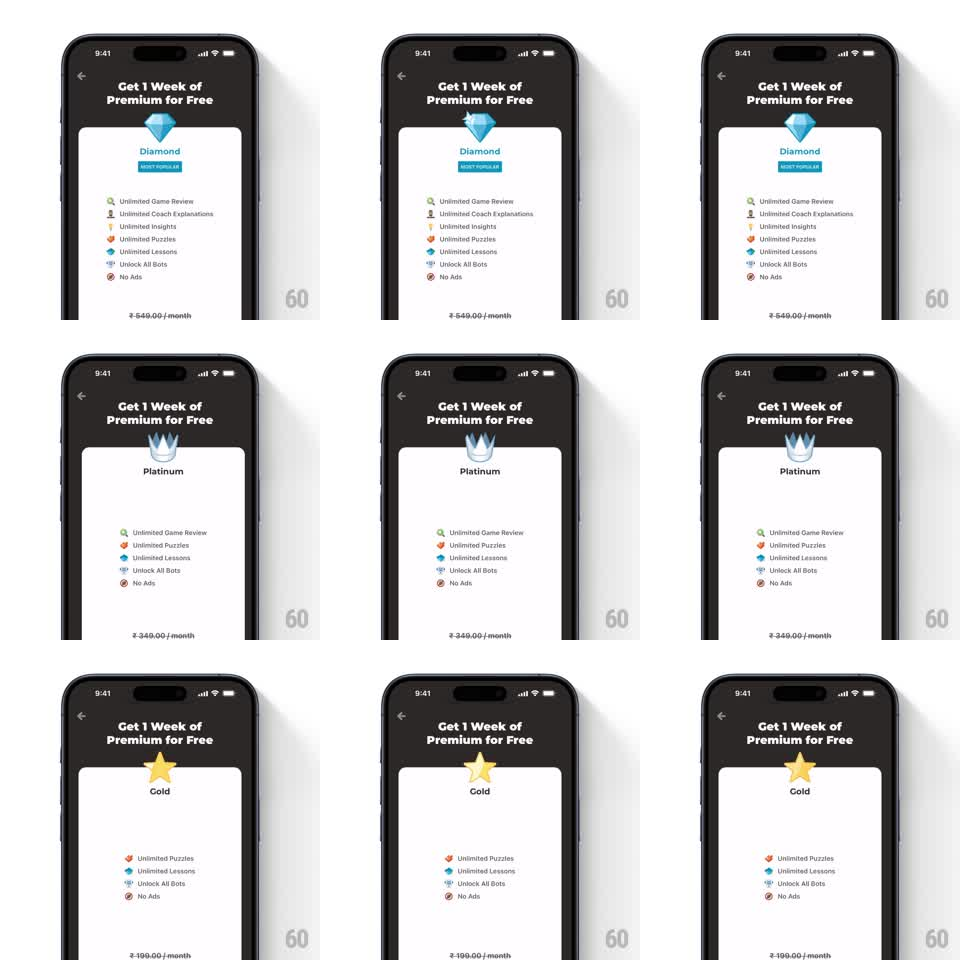

Media
Frame-by-frame

Rebuild this animation 1:1: Chess premium's tier carousel - swipe between Diamond, Platinum and Gold plans while each tier's icon spins in 3D and springs to rest above its feature list.

Rebuild this animation 1:1: Chess premium's tier carousel - swipe between Diamond, Platinum and Gold plans while each tier's icon spins in 3D and springs to rest above its feature list. ## Integration Integration: stack-agnostic spec - springs given as stiffness/damping, timed motions as duration + curve; map every value to your framework and animation library of choice. ## Scene Dark paywall: "Get 1 Week of Premium for Free" header, back chevron. Center: tier icon (gem, crown, star) above tier name and MOST POPULAR chip, feature checklist, price line at the bottom. ## Motion spec Pattern: paged carousel with 3D icon spin, ~600ms per page. - Horizontal swipe pages between tiers (drag-linked 1:1, snap spring ~300/20). - As a new tier arrives, its icon performs one full 3D spin on the vertical axis (500ms, ease-out) and settles with a small spring bounce (scale 1.1 -> 1). - The icon carries a moving specular highlight during the spin so the metal/gem material reads. - Tier name, chip, feature list and price crossfade (200ms) timed to land as the icon finishes its spin. - The previous icon exits with the page slide, no spin on the way out. ## Calibration - Exactly one rotation; a partial spin looks indecisive, a double spin looks busy. - The spin starts when the page snap starts, not after - the two motions overlap. ## Reduced motion Icons crossfade with the page slide; no spin. ## Don't miss - The checklist differs per tier and changes with the crossfade, not row-by-row - row stagger here reads as loading. - Price updates in the same beat as the icon landing; a lagging price is a trust bug on a paywall.